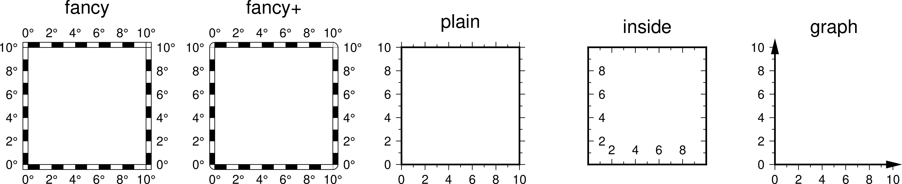
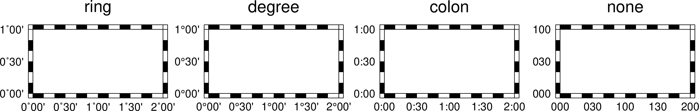
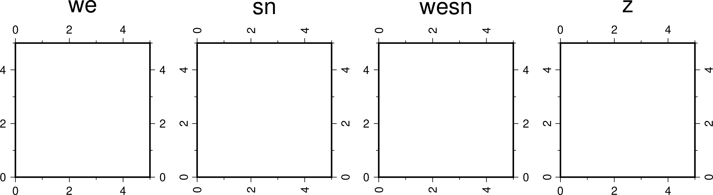
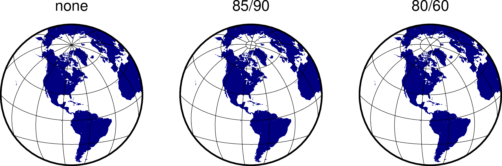

MAP参数¶
边框相关参数¶
- MAP_FRAME_TYPE
底图边框类型 [fancy]
可选值包括
inside|plain|graph|fancy|fancy+。一般情况下，fancy边框类型仅适用于投影后的X、Y方向平行于经度纬度方向的情况，比如rectangular投影、polar投影。对于某些投影，只能使用plain底图，即便 MAP_FRAME_TYPE 被设置为fancy。下图给出了不同的底图边框类型的效果：
- MAP_FRAME_PEN
- 绘制底图类型为plain时边框的画笔属性 [
thicker,black] - MAP_FRAME_WIDTH
- 设置底图类型为fancy时的边框宽度 [
5p] - MAP_FRAME_AXES
要绘制/标注的轴 [
WSENZ]默认值为
WSENZ，即2D底图下绘制并标注四条边，可以通过-B选项控制实际绘制的边。详情见 -B 选项 选项。
标注相关参数¶
- MAP_ANNOT_OFFSET
- 同时设置
MAP_ANNOT_OFFSET_PRIMARY和MAP_ANNOT_OFFSET_SECONDARY的值 - MAP_ANNOT_OFFSET_PRIMARY
- 一级标注的开始位置与刻度尾端间的距离 [5p]
- MAP_ANNOT_OFFSET_SECONDARY
- 二级标注的底部与secondary标注的顶部之间的距离 [5p]
- MAP_DEGREE_SYMBOL
在地图上绘制“度”时所使用的符号 [degree]
可以取
ring|degree|colon|none。下图给出了取不同值时的绘图效果：- MAP_ANNOT_ORTHO
控制笛卡尔投影下哪些轴的标注垂直于轴 [
we]该参数可以将
wesnz做任意组合。下图给出了取不同值时的绘图效果：注解
此参数仅对笛卡尔投影有效。对于地理投影，可使用 MAP_ANNOT_OBLIQUE。
- MAP_ANNOT_OBLIQUE
控制倾斜投影下标注和刻度线的显示
可以将如下任意几个数字求和的结果作为该参数的值：
1：当网格线穿过底图边界时添加标注，否则仅在上下边界处标注经度，在左右边界处标注纬度2：经度标注水平绘制4：纬度标注水平绘制8：倾斜的刻度线会扩展使得其长度等于指定刻度线长度16：忽略网格线与边框的夹角，刻度线总是垂直于底图边框32：纬度标注平行于底图边框
- MAP_ANNOT_MIN_ANGLE
- 对于某些倾斜投影方式而言，如果标注的基线与地图的边界之间的夹角小于该值，则不绘制标注。合理的取值范围为0到90 [20]
- MAP_ANNOT_MIN_SPACING
- 在某些倾斜投影中，相邻两个标注之间的最小距离，若标注的距离小于该值，则不绘制 [0p]
标签相关参数¶
- MAP_LABEL_OFFSET
- 轴标注底部与轴标签顶部间的距离 [8p]
刻度相关参数¶
- MAP_TICK_PEN
- 同时设置
MAP_TICK_PEN_PRIMARY和MAP_TICK_PEN_SECONDARY的值 - MAP_TICK_PEN_PRIMARY
- 一级刻度的画笔属性 [thinner,black]
- MAP_TICK_PEN_SECONDARY
- 二级刻度的画笔属性 [thinner,black]
- MAP_TICK_LENGTH
- 同时设置
MAP_TICK_LENGTH_PRIMARY和MAP_TICK_LENGTH_SECONDARY的值 - MAP_TICK_LENGTH_PRIMARY
一级刻度的主刻度和次刻度的长度 [5p/2.5p]
若只给定一个长度值，则次刻度的长度假定为主刻度的一半
- MAP_TICK_LENGTH_SECONDARY
二级刻度的主刻度和次刻度的长度 [15p/3.75p]
若只给定一个长度值，则次刻度的长度假定为主刻度的25%
网格线相关参数¶
- MAP_GRID_PEN
- 同时设置
MAP_GRID_PEN_PRIMARY和MAP_GRID_PEN_SECONDARY的值 - MAP_GRID_PEN_PRIMARY
- 一级网格线的线条属性 [default,black]
- MAP_GRID_PEN_SECONDARY
- 二级网格线的线条属性 [thinner,black]
- MAP_GRID_CROSS_SIZE
- 同时设置
MAP_GRID_CROSS_SIZE_PRIMARY和MAP_GRID_CROSS_SIZE_SECONDARY的值 - MAP_GRID_CROSS_SIZE_PRIMARY
- 一级网格十字线的大小，0表示绘制连续的网格线 [0p]
- MAP_GRID_CROSS_SIZE_SECONDARY
- 二级网格十字线的大小，0表示绘制连续的网格线 [0p]
- MAP_POLAR_CAP
控制网格线在两极附近的显示 [
85/90]若取值为
none，则表示不对极点附近的网格线做特殊处理。否则可以按<lat>/<dlon>格式取值，表示在-<lat>到+<lat>纬度范围内正常绘制网格线；在大于+<lat>和小于-<lat>纬度区域内，则按照<dlon>指定的经线间隔绘制网格线。GMT会在<lat>纬度处绘制一个圈圈以分隔这两个纬度区间。下图展示了该参数取不同值时的绘图效果：

标题相关参数¶
- MAP_TITLE_OFFSET
- 图标题的底部与轴标注（或轴标签）的顶部之间的距离 [14p]
- MAP_HEADING_OFFSET
- 子图标题的顶部与图总标题的底部之间的距离 [18p]
其它参数¶
- MAP_DEFAULT_PEN
设置所有与
-W选项相关的画笔属性的默认值 [default,pen]在参数值的前面加上
+可以覆盖其他PEN相关参数中的颜色。- MAP_ORIGIN_X
- 新绘图在纸张上的原点的X坐标（仅适用于GMT经典模式）[72p]
- MAP_ORIGIN_Y
- 设置新绘图在纸张上的原点的Y坐标（仅适用于GMT经典模式）[72p]
- MAP_LOGO
是否在左下角绘制GMT时间戳 [
false]可以取
true|false，等效于在命令行中使用 -U 选项- MAP_LOGO_POS
- GMT时间戳相对于当前绘图原点的对齐方式与位置 [
BL/-54p/-54p] - MAP_SCALE_HEIGHT
- 地图比例尺的高度 [5p]
- MAP_LINE_STEP
绘制线段时所使用的最大步长 [0.75p]
地理投影下，两点之间会用大圆路径连接，因而GMT需要先计算大圆路径上的其他中间点的坐标，并将这些点用直线连起来。若该步长太大，会导致大圆路径看上去很不光滑。
- MAP_VECTOR_SHAPE
矢量箭头的形状 [0]
可以取-2到2之间的任意实数。下面展示了取-2、-1、0、1和2时的矢量箭头的形状：